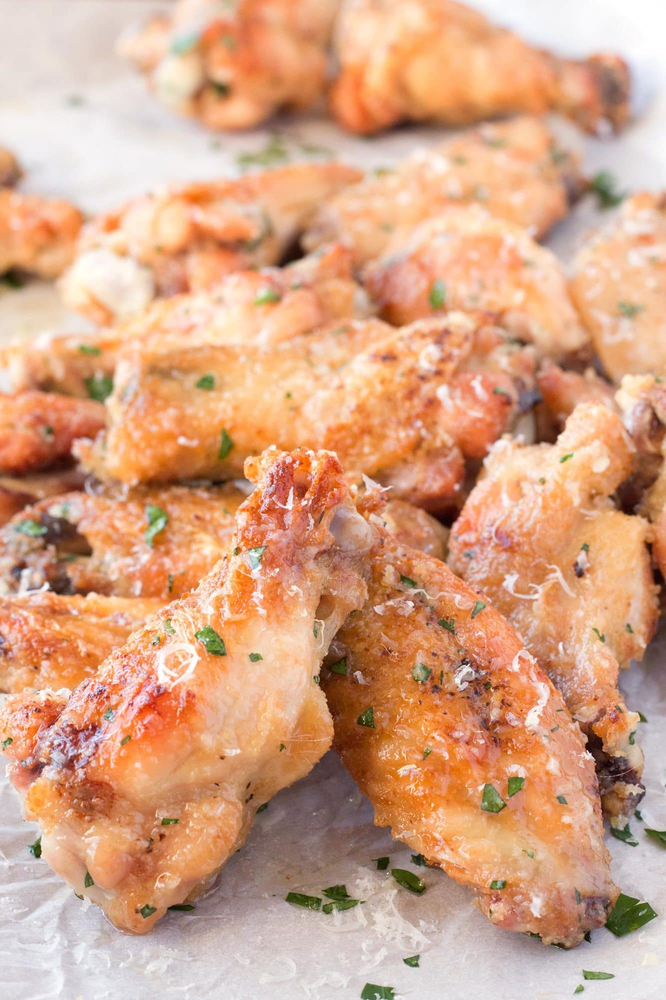

Garlic Parmesan Chicken Wings

Savory chicken wings great anytime!
These wings are savory, juicy, crispy, just everything you could hope for in a wing!
Try this recipe out the next time you want wings without the mess!
Ingredients
- 1 lb chicken wings
- 2 tbl vegetable oil
- 2 tsp favorite chicken dry rub
- 1 tsp garlic powder
- 1 tsp salt
- 2 tbl butter
- 2 cloves garlic
- 2 tbl honey
Steps
- Preheat oven to 400 degrees
- In a bowl, combine wings, vegetable oil, garlic powder, dry rub, and salt. Use tongs to toss and coat evenly.
- Put wings on baking sheet and bake for 15 minutes. Flip, then return to oven for 15 more minutes.
- While wings are in the oven, let's make the glaze. Melt the butter in a skillet on medium-high heat. Once melted, add the garlic and a dash of salt. Cook roughly 30 seconds. Add honey and stir until mixed throughoughly.
- Once the wings are done cooking. Remove from the oven. Set oven to broil. Glaze and flip the wings. Broil the wings for 2-4 minutes (depending on desired crispiness).